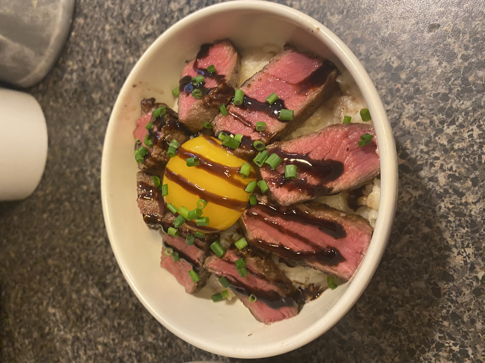

I am Reid Getic
Pitt Sophmore
Background
Grew up in Shippensburg which is around 3 hours east to central Pennsylvania. Participated in multiple sports growing up and had always been interested in the sports world.
Career
Plan to enter the School of Rehabilitation Science here at Pitt and study Rehab along with Sports Medicene and/or Athletic Training. Following this, I plan to attend an Exercise Sciene or Physical Therapy graduate program.
Hobbies
Cooking - worked in a resteraunt for two years where my love for good food and the ways to prepare it and serve it were born and now remains one of my passions.

Hiking - grew up in a mountainous area and have hiking with friends and family all life long and started visitng national parks last summer to hike famous and challenging trails.
Traveling - have family that live all over the world so visitng them at a young age led to a love for traveling and seeing new places especially bodies of water.
Entertainment
I enjoy cooking and believe it a good way to learn about other cultures and regions of the world and well as learn patience and many other skills.
Community
I am involved in a Christian outreach program called YoungLife where we spread the gospel to college students and highschool kids.